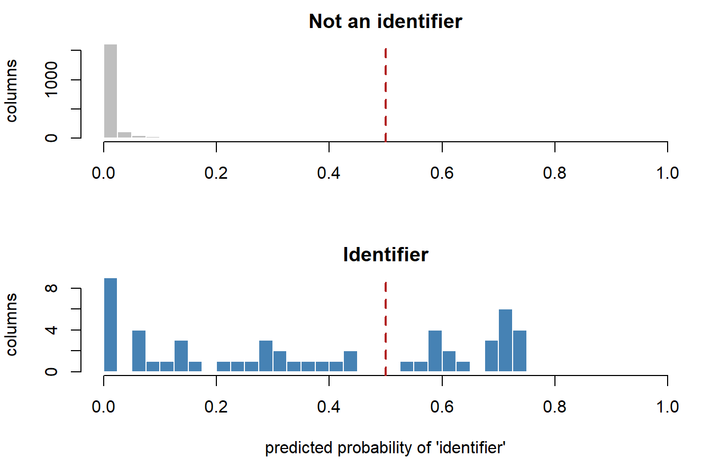
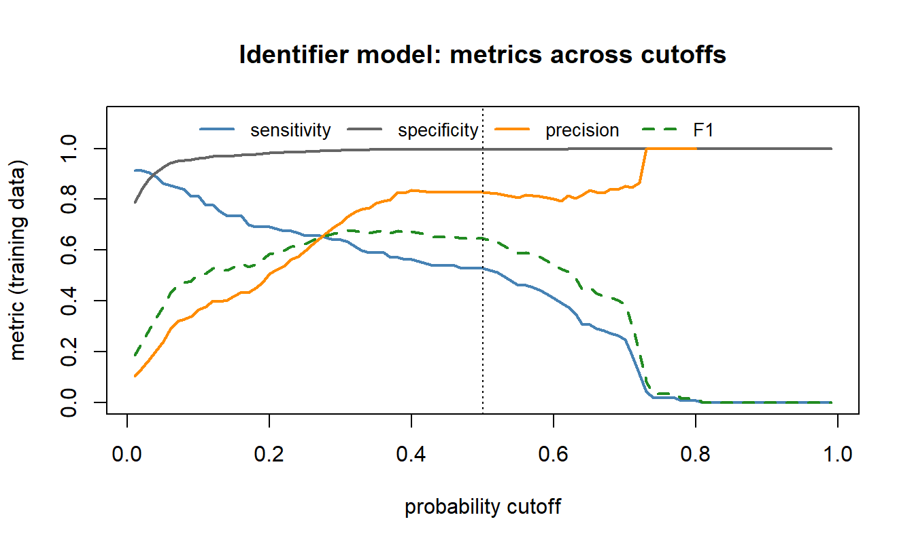
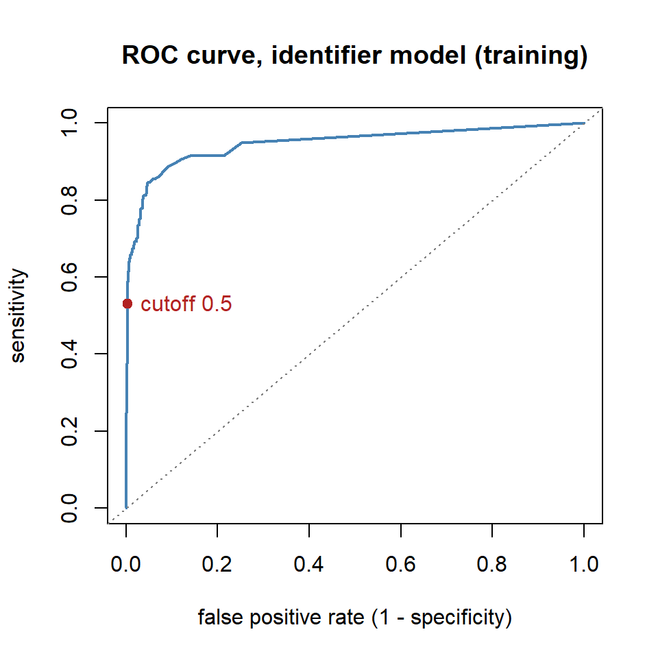
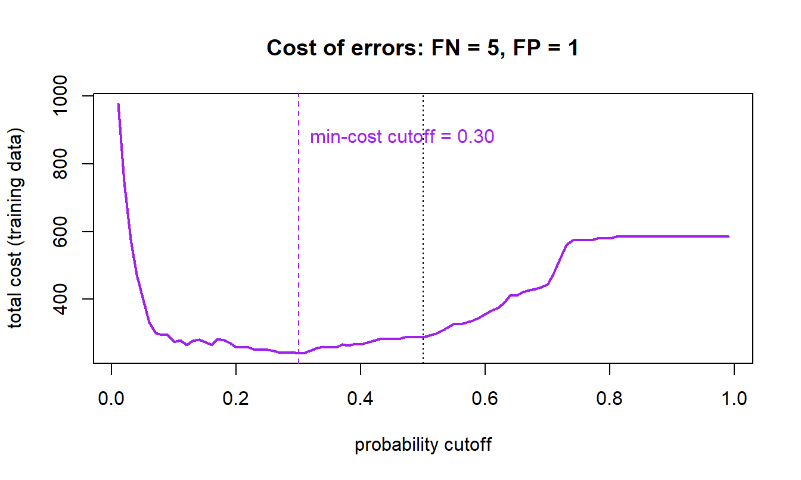

Unit 26 · Classification Models
Turn predicted probabilities into yes/no calls, read the confusion matrix, and move the cutoff when the two kinds of error do not cost the same.
Unit 20 used logistic regression for inference: what does a change in X do to the probability of the outcome? This tutorial uses the same model for prediction. Once a model produces a probability for every case, someone has to decide which cases to call “yes”, and that decision has its own vocabulary and its own mistakes. The example comes from data-quality work, deciding automatically what kind of information each column of a spreadsheet holds, using a column-level feature dataset built for the formex R package. The steps are:
glm(),We fit two models on the same data. The first is a strong model: it is right about almost everything it flags and finds most of what it is looking for. The second is a lopsided model: it is excellent at saying “no” and poor at saying “yes”, and the headline accuracy number hides that completely. The second model is the one a threshold can fix.
Each row of the dataset is one column of a real table,
described by numbers computed from its values by formex’s
fx_extract_features(). The full dataset has 477 features;
the teaching extract keeps a dozen interpretable ones plus the labels.
You don’t need the formex package to follow along: the code below uses
only base R, and the data file loads straight from the course site.
path <- "data/type_features_logit.rds" # the copy next to this file
if (!file.exists(path)) {
path <- url("https://github.com/lecy/econometrics/raw/main/lectures4/classifiers/data/type_features_logit.rds")
}
d <- readRDS(path)
dim(d)
#> [1] 6390 19A few rows, showing the example values and some of the features:
d[c(1, 2000, 4000), c("sample_values", "data_type", "semantic_type",
"n_digits_mean", "pct_all_digits", "unique_ratio")]
#> sample_values
#> 1 Wauconda Twp, Wauconda, 16-W-1;;Lake Eara, Rockefeller, 260-J-2;;Park Av, Grayslake, 75-R;;Robertson Av, Lake Zurich, 11-L;;Lake & Brainart Ct, Libertyville, 127-J
#> 2000 62.1;;62.2;;62.0;;61.8
#> 4000 88;;41;;47;;54;;34
#> data_type semantic_type n_digits_mean pct_all_digits unique_ratio
#> 1 text full 2.000000 0 1.0000000
#> 2000 number measurement 2.000000 0 0.2666667
#> 4000 number count 1.947368 1 0.9473684The features we use (all computed from the values alone — the column header never enters):
| Feature | Meaning |
|---|---|
n_digits_mean |
Average number of digits in the integer part of numeric values. |
log10_range |
Spread of numeric values, \(\log_{10}\) of (max − min) relative to the scale of the values. |
pct_all_digits |
Share of values made entirely of digits. |
dig_entropy |
How evenly the digits 0–9 are used. Codes and serial numbers use all ten digits evenly; counts and prices do not. |
unique_ratio |
Distinct values / total values. Identifiers are (nearly) all unique. |
pct_chr_digit |
Share of characters that are digits. |
len_mean |
Average string length. |
pct_alnum_mixed |
Share of values mixing letters and digits
(e.g. 089608776X). |
lcp_frac |
Length of the prefix all values share, relative to value length
(e.g. every value starts with isbn). |
Missing feature values (a numeric statistic on a text column, for instance) were already imputed in the extract, following the per-feature rules described in the feature dataset guide.
We create two yes/no outcomes:
is_year — is the column a calendar
year (1995, 2003, 2011, ...)?is_id — is the column an identifier
(ISBNs, record IDs, DOIs, hashes)?d$is_year <- as.integer(d$semantic_type %in% "year")
d$is_id <- as.integer(d$data_type == "identifier")
c(years = sum(d$is_year), ids = sum(d$is_id), all_columns = nrow(d))
#> years ids all_columns
#> 119 172 6390
round(100 * c(year = mean(d$is_year), id = mean(d$is_id)), 1) # base rates, %
#> year id
#> 1.9 2.7Both outcomes are rare: under 3% of columns. Rarity is the normal situation in classification work (fraud, disease, defaults, and here, column types), and it is exactly what makes plain “accuracy” misleading, as we will see.
We fit each model on 70% of the rows and judge it on the 30% it never saw. Judging a model on its own training data rewards memorization.
Two helper functions do the bookkeeping for the rest of the tutorial. The first cross-tabulates truth against prediction; the second computes the metrics from the four cells of that table.
confusion <- function(actual, predicted) {
table(Actual = factor(actual, levels = c(1, 0), labels = c("Yes", "No")),
Predicted = factor(predicted, levels = c(1, 0), labels = c("Yes", "No")))
}
metrics <- function(actual, predicted) {
TP <- sum(predicted == 1 & actual == 1)
FP <- sum(predicted == 1 & actual == 0)
FN <- sum(predicted == 0 & actual == 1)
TN <- sum(predicted == 0 & actual == 0)
sens <- TP / (TP + FN)
spec <- TN / (TN + FP)
prec <- if (TP + FP > 0) TP / (TP + FP) else NA
c(TP = TP, FP = FP, FN = FN, TN = TN,
accuracy = (TP + TN) / (TP + FP + FN + TN),
no_info_rate = max(mean(actual), 1 - mean(actual)),
sensitivity = sens, # a.k.a. recall, true positive rate
specificity = spec, # true negative rate
precision = prec, # a.k.a. positive predictive value
npv = TN / (TN + FN), # negative predictive value
F1 = 2 * TP / (2 * TP + FP + FN),
balanced_accuracy = (sens + spec) / 2)
}The confusion matrix is laid out with the positive class (“Yes”) first:
| Predicted Yes | Predicted No | |
|---|---|---|
| Actual Yes | TP (true positive) | FN (false negative) |
| Actual No | FP (false positive) | TN (true negative) |
Every metric is a ratio of these four counts — they differ only in which cells they put in the numerator and denominator, which is to say which question they answer:
| Metric | Formula | Question it answers |
|---|---|---|
| Accuracy | (TP+TN) / all | What share of all calls were right? |
| Sensitivity (recall) | TP / (TP+FN) | Of the real positives, how many did we catch? |
| Specificity | TN / (TN+FP) | Of the real negatives, how many did we correctly leave alone? |
| Precision (PPV) | TP / (TP+FP) | When the model says “yes”, how often is it right? |
| NPV | TN / (TN+FN) | When the model says “no”, how often is it right? |
| F1 | 2TP / (2TP+FP+FN) | Harmonic mean of precision and recall; ignores TN. |
| Balanced accuracy | (sens+spec) / 2 | Accuracy with both classes weighted equally. |
| No-information rate | share of the majority class | The accuracy of always guessing the most common class. |
A year column has a distinctive numeric fingerprint: the values are
all digits, they have four digits, and they sit in a narrow band
(1900–2030), so their range is small relative to their size. A linear
term in n_digits_mean can’t express “close to 4” (both
2-digit and 9-digit columns are not years), so we build one
feature that measures the distance from four digits.
train$digits_from_4 <- abs(train$n_digits_mean - 4)
test$digits_from_4 <- abs(test$n_digits_mean - 4)m_year <- glm(is_year ~ digits_from_4 + log10_range + pct_all_digits,
data = train, family = binomial)
#> Warning: glm.fit: fitted probabilities numerically 0 or 1 occurred
summary(m_year)
#>
#> Call:
#> glm(formula = is_year ~ digits_from_4 + log10_range + pct_all_digits,
#> family = binomial, data = train)
#>
#> Coefficients:
#> Estimate Std. Error z value Pr(>|z|)
#> (Intercept) 1.7774 0.5188 3.426 0.000613 ***
#> digits_from_4 -2.6909 0.3163 -8.507 < 2e-16 ***
#> log10_range -5.9552 1.0789 -5.520 3.4e-08 ***
#> pct_all_digits -0.3003 0.5203 -0.577 0.563881
#> ---
#> Signif. codes: 0 '***' 0.001 '**' 0.01 '*' 0.05 '.' 0.1 ' ' 1
#>
#> (Dispersion parameter for binomial family taken to be 1)
#>
#> Null deviance: 818.34 on 4472 degrees of freedom
#> Residual deviance: 203.54 on 4469 degrees of freedom
#> AIC: 211.54
#>
#> Number of Fisher Scoring iterations: 10The warning
fitted probabilities numerically 0 or 1 occurred is not an
error. It means some training columns are so clearly not years
(text columns, nine-digit numbers) that the model gives them a
probability indistinguishable from 0. That is common when a class is
well separated, and it is a hint that this model will perform well.
Coefficients are on the log-odds scale. Exponentiating gives odds ratios, which are easier to talk about:
round(exp(coef(m_year)), 4)
#> (Intercept) digits_from_4 log10_range pct_all_digits
#> 5.9147 0.0678 0.0026 0.7406digits_from_4: each extra digit away from four
multiplies the odds of “year” by about 0.07 — the odds collapse. This is
the workhorse feature.log10_range: a wider spread of values sharply lowers
the odds. Years cluster within a few decades.pct_all_digits is not significant and
its sign is even slightly negative. That surprises people: aren’t years
all digits? They are — but so are the many non-year numeric columns.
Once we already know a column has four-digit numbers in a narrow range,
also knowing that its values are all digits adds nothing.
Logistic coefficients are always read holding the other features
constant.predict(..., type = "response") returns the model’s
estimated probability that each test column is a year. The default
decision rule calls it a year when that probability exceeds 0.5.
confusion(test$is_year, test$yhat_year)
#> Predicted
#> Actual Yes No
#> Yes 30 7
#> No 4 1876
met_year <- metrics(test$is_year, test$yhat_year)
round(met_year, 3)
#> TP FP FN TN
#> 30.000 4.000 7.000 1876.000
#> accuracy no_info_rate sensitivity specificity
#> 0.994 0.981 0.811 0.998
#> precision npv F1 balanced_accuracy
#> 0.882 0.996 0.845 0.904How to read this:
It is worth looking at the mistakes. The misses are columns
labeled “year” whose values are not plain four-digit years:
class-year codes (Fr, Sr), spelled numbers, full dates,
academic years (2003/04), Minguo-calendar years, and a
couple of plain labeling errors (a list of countries, a list of names).
A model of four-digit numbers cannot catch these — and some of
them it should not. The false positives are columns of
four-digit numbers in a narrow range that happen to be ranks or codes:
honest mistakes that look exactly like years.
fn <- test$is_year == 1 & test$yhat_year == 0
fp <- test$is_year == 0 & test$yhat_year == 1
test[fn, c("sample_values", "p_year")]
#> sample_values p_year
#> 5462 Fr;;Sr;;So;;Jr 0.0009948791
#> 5470 one;;two 0.0009948791
#> 5496 america;;Italy;;Isreal;;Ireland;;U.K 0.0009948791
#> 5500 1/1/2004;;1/1/2005;;1/1/2006;;1/1/2007;;1/1/2008 0.0009948791
#> 5506 Lena;;Leonie;;Anna;;Sarah;;Julia 0.0009948791
#> 5517 2003/04;;2004/05;;2005/06;;2006/07;;2007/08 0.0009948791
#> 5522 民國74年;;民國75年;;民國76年;;民國77年;;民國78年 0.0009948791
test[fp, c("sample_values", "semantic_type", "p_year")]
#> sample_values semantic_type p_year
#> 3484 2010;;? long 0.8141423
#> 4418 2727;;2686;;2646;;2612;;2611 rank 0.7565704
#> 4488 1156;;1137;;1132;;1127;;1159 rank 0.7068990
#> 4602 1091;;1090;;1089;;1088;;1087 geographic 0.8071751This is a strong, balanced model: high precision, high sensitivity. Moving the threshold would only trade a few misses for a few false alarms; there is not much to gain.
Identifiers are (nearly) all unique, use every digit evenly, often mix letters and digits, often share a prefix, and tend to be long.
m_id <- glm(is_id ~ dig_entropy + unique_ratio + pct_chr_digit + len_mean +
pct_alnum_mixed + lcp_frac,
data = train, family = binomial)
signif(cbind(coef = coef(m_id), odds_ratio = exp(coef(m_id)),
p_value = summary(m_id)$coefficients[, 4]), 3)
#> coef odds_ratio p_value
#> (Intercept) -1.24e+01 4.30e-06 3.57e-32
#> dig_entropy 2.86e+00 1.75e+01 1.18e-07
#> unique_ratio 5.05e-01 1.66e+00 4.00e-01
#> pct_chr_digit 2.67e+00 1.44e+01 5.02e-05
#> len_mean -3.03e-04 1.00e+00 9.29e-01
#> pct_alnum_mixed 3.38e+00 2.93e+01 7.87e-18
#> lcp_frac 3.64e+00 3.81e+01 4.64e-14Digit entropy, digit share, mixed letters-and-digits, and a shared
prefix all raise the odds strongly. unique_ratio and
len_mean add little once the others are in the model (large
p-values); we keep them to show that a non-significant coefficient is
not a reason the model fails, it is just a feature that the others make
redundant.
test$p_id <- predict(m_id, newdata = test, type = "response")
test$yhat_id <- as.integer(test$p_id > 0.5)
confusion(test$is_id, test$yhat_id)
#> Predicted
#> Actual Yes No
#> Yes 22 33
#> No 5 1857
met_id <- metrics(test$is_id, test$yhat_id)
round(met_id, 3)
#> TP FP FN TN
#> 22.000 5.000 33.000 1857.000
#> accuracy no_info_rate sensitivity specificity
#> 0.980 0.971 0.400 0.997
#> precision npv F1 balanced_accuracy
#> 0.815 0.983 0.537 0.699At a glance this model also looks excellent: accuracy 0.980, specificity 0.997, precision 0.81. But look at the first row of the matrix, the actual identifiers:
This is the lopsided pattern: high specificity, low sensitivity. The model is conservative — it only says “yes” when it is very sure, so its “yes” calls are usually right (decent precision) but it says “yes” too rarely.
A note on the word “precision”. In everyday speech “a precise model” means a good one. In classification, precision is one specific metric, TP / (TP + FP). Notice that the lopsided model’s precision is fairly high — the problem is its sensitivity. A model that is conservative on a rare class almost always looks like this: high specificity, high precision, low recall. Always report sensitivity and precision together.
Logistic regression estimates probabilities that are, on average, faithful to the data. When only 2.6% of training columns are identifiers, the model’s probabilities for real identifiers are pulled toward that low base rate — many land at 0.2 or 0.3, well above what non-IDs get, but below 0.5.
op <- par(mfrow = c(2, 1), mar = c(4.5, 4, 2, 1))
brks <- seq(0, 1, by = 0.025)
hist(test$p_id[test$is_id == 0], breaks = brks, col = "gray75", border = "white",
main = "Not an identifier", xlab = "", ylab = "columns")
abline(v = 0.5, lty = 2, lwd = 2, col = "firebrick")
hist(test$p_id[test$is_id == 1], breaks = brks, col = "steelblue", border = "white",
main = "Identifier", xlab = "predicted probability of 'identifier'",
ylab = "columns")
abline(v = 0.5, lty = 2, lwd = 2, col = "firebrick")
The non-identifiers pile up near zero. The identifiers are spread out: the model never gets very confident about any of them (the highest scores are around 0.74), and more than half of them fall to the left of the red cutoff, many well above zero. The model is ranking the columns well (identifiers get higher scores than non-identifiers); the cutoff is just in the wrong place for this base rate.
The area under the ROC curve (AUC) measures ranking quality independent of any cutoff: it is the probability that a randomly chosen identifier scores higher than a randomly chosen non-identifier.
auc <- function(actual, score) {
r <- rank(score)
n1 <- sum(actual == 1); n0 <- sum(actual == 0)
(sum(r[actual == 1]) - n1 * (n1 + 1) / 2) / (n1 * n0)
}
c(year_model = auc(test$is_year, test$p_year),
id_model = auc(test$is_id, test$p_id))
#> year_model id_model
#> 0.9100489 0.9462650An AUC near 0.95 says the identifier model’s scores are informative — it is the 0.5 rule that is throwing the information away. That is the signal that changing the threshold will help.
The cutoff is a choice, not a property of the model. Lowering it turns more columns into “yes” calls: sensitivity goes up, specificity (and usually precision) go down. Let’s see the whole trade-off by sweeping the cutoff from 0.01 to 0.99.
Important: the threshold is a tuning parameter, so we pick it using the training data and only then check it on the test data. Choosing it by peeking at the test set would make the test-set numbers optimistic.
train$p_id <- predict(m_id, newdata = train, type = "response")
sweep_thresholds <- function(actual, prob, cutoffs = seq(0.01, 0.99, by = 0.01)) {
out <- t(sapply(cutoffs, function(k) metrics(actual, as.integer(prob > k))))
data.frame(cutoff = cutoffs, out)
}
sw <- sweep_thresholds(train$is_id, train$p_id)
round(sw[round(sw$cutoff, 2) %in% c(0.05, 0.1, 0.15, 0.2, 0.3, 0.4, 0.5, 0.7),
c("cutoff", "TP", "FP", "FN", "sensitivity", "specificity",
"precision", "F1", "balanced_accuracy")], 3)
#> cutoff TP FP FN sensitivity specificity precision F1 balanced_accuracy
#> 5 0.05 101 319 16 0.863 0.927 0.240 0.376 0.895
#> 10 0.10 95 164 22 0.812 0.962 0.367 0.505 0.887
#> 15 0.15 86 119 31 0.735 0.973 0.420 0.534 0.854
#> 20 0.20 81 79 36 0.692 0.982 0.506 0.585 0.837
#> 30 0.30 75 31 42 0.641 0.993 0.708 0.673 0.817
#> 40 0.40 66 13 51 0.564 0.997 0.835 0.673 0.781
#> 50 0.50 62 13 55 0.530 0.997 0.827 0.646 0.763
#> 70 0.70 29 5 88 0.248 0.999 0.853 0.384 0.623plot(sw$cutoff, sw$sensitivity, type = "l", lwd = 2, col = "steelblue",
ylim = c(0, 1.12), xlab = "probability cutoff", ylab = "metric (training data)",
main = "Identifier model: metrics across cutoffs")
lines(sw$cutoff, sw$specificity, lwd = 2, col = "gray40")
lines(sw$cutoff, sw$precision, lwd = 2, col = "darkorange")
lines(sw$cutoff, sw$F1, lwd = 2, col = "forestgreen", lty = 2)
abline(v = 0.5, lty = 3)
legend("top", bty = "n", lwd = 2, ncol = 4, cex = 0.85,
col = c("steelblue", "gray40", "darkorange", "forestgreen"),
lty = c(1, 1, 1, 2),
legend = c("sensitivity", "specificity", "precision", "F1"))
Specificity barely moves across the whole range — there are so many non-identifiers, and most score near zero, that even a low cutoff flags only a handful of them. Sensitivity, on the other hand, climbs steeply as the cutoff drops. Somewhere around 0.1–0.3 the model catches far more identifiers at a small cost in precision.
The ROC curve plots the same sweep as sensitivity against the false-positive rate (1 − specificity). Each cutoff is one point; the 0.5 cutoff is marked.
roc <- sweep_thresholds(train$is_id, train$p_id, cutoffs = seq(0, 1, by = 0.005))
plot(1 - roc$specificity, roc$sensitivity, type = "l", lwd = 2, col = "steelblue",
xlab = "false positive rate (1 - specificity)", ylab = "sensitivity",
main = "ROC curve, identifier model (training)")
abline(0, 1, lty = 3, col = "gray50")
at50 <- which.min(abs(roc$cutoff - 0.5))
points(1 - roc$specificity[at50], roc$sensitivity[at50], pch = 19, col = "firebrick")
text(1 - roc$specificity[at50], roc$sensitivity[at50], "cutoff 0.5",
pos = 4, col = "firebrick")
The 0.5 point sits low on the curve, where it is hugging the left axis. The curve rises steeply to its right: big gains in sensitivity are available for very little movement in the false-positive rate.
When you have no cost information, two common rules are:
k_f1 <- sw$cutoff[which.max(sw$F1)]
k_youden <- sw$cutoff[which.max(sw$sensitivity + sw$specificity - 1)]
c(max_F1 = k_f1, max_Youden = k_youden)
#> max_F1 max_Youden
#> 0.31 0.06Youden’s J treats a missed identifier and a false alarm as equally bad in rate terms, and because negatives vastly outnumber positives it tends to push the cutoff very low and accept many false positives. F1 is usually more conservative. Neither is “right” — each encodes an implicit judgement about costs. The better approach is to make that judgement explicit.
In practice the two kinds of mistakes rarely cost the same. For the identifier model:
00721 → 721),
silently corrupting a key that other tables join on.Suppose a missed ID costs 5 units (say, 5 minutes of debugging, amortized) and a false alarm costs 1 unit (a 1-minute review). The total cost of a cutoff is
\[\text{cost}(k) = c_{FN}\cdot FN(k) + c_{FP}\cdot FP(k),\]
and we choose the \(k\) that minimizes it.
c_fn <- 5
c_fp <- 1
sw$cost <- c_fn * sw$FN + c_fp * sw$FP
k_cost <- sw$cutoff[which.min(sw$cost)]
k_cost
#> [1] 0.3plot(sw$cutoff, sw$cost, type = "l", lwd = 2, col = "purple",
xlab = "probability cutoff", ylab = "total cost (training data)",
main = sprintf("Cost of errors: FN = %d, FP = %d", c_fn, c_fp))
abline(v = 0.5, lty = 3)
abline(v = k_cost, lty = 2, col = "purple")
text(k_cost, max(sw$cost) * 0.9, sprintf("min-cost cutoff = %.2f", k_cost),
pos = 4, col = "purple")
If the model’s probabilities are well calibrated, the cost-minimizing rule has a closed form. Call a column positive when the expected cost of saying “no” exceeds the expected cost of saying “yes”:
\[p \cdot c_{FN} > (1 - p)\cdot c_{FP} \quad\Longleftrightarrow\quad p > \frac{c_{FP}}{c_{FP} + c_{FN}}.\]
With \(c_{FN} = 5\) and \(c_{FP} = 1\) the theoretical cutoff is \(1/6 \approx 0.167\). The default 0.5 cutoff is just the special case \(c_{FP} = c_{FN}\): it is optimal only when both errors cost the same.
Here the two disagree: the formula says 0.17, the sweep says 0.30. The formula is only as good as the probabilities fed into it, and this model’s probabilities are not perfectly calibrated. You can check calibration directly by binning the predictions and comparing the average predicted probability with the observed share of identifiers in each bin:
bins <- cut(train$p_id, c(0, 0.01, 0.05, 0.1, 0.2, 0.3, 0.5, 1),
include.lowest = TRUE)
round(cbind(columns = table(bins),
mean_predicted = tapply(train$p_id, bins, mean),
observed_rate = tapply(train$is_id, bins, mean)), 3)
#> columns mean_predicted observed_rate
#> [0,0.01] 3438 0.001 0.003
#> (0.01,0.05] 615 0.026 0.010
#> (0.05,0.1] 161 0.067 0.037
#> (0.1,0.2] 99 0.146 0.141
#> (0.2,0.3] 54 0.245 0.111
#> (0.3,0.5] 31 0.349 0.419
#> (0.5,1] 75 0.661 0.827In the low-to-middle bins the model over-states the chance of an identifier (in the 0.2–0.3 bin it predicts about 25%, but only about 11% are IDs), and in the top bin it under-states it. Over-stated low scores mean a cutoff of 0.17 lets in more false positives than the formula expects, so the real optimum sits higher. The difference matters: on the training data the total cost is 288 at the default 0.5, 283 at the theoretical cutoff (barely an improvement, because the extra false positives eat up most of the gain), and 241 at the empirical one.
The empirical sweep counts each kind of error at each cutoff, so it doesn’t depend on the probabilities being calibrated. When the formula and the sweep disagree, trust the sweep, and treat the gap as a sign that the model’s probabilities shouldn’t be read literally. (With very few positives the sweep can be noisy too; cross-validation or a separate validation set gives a steadier estimate.)
Now — and only now — we apply the cutoffs chosen on training data to the held-out test set and compare them with the default.
cutoffs <- c(default_0.5 = 0.5, max_F1 = k_f1,
min_cost_5to1 = k_cost, max_Youden = k_youden)
cmp <- t(sapply(cutoffs, function(k) {
m <- metrics(test$is_id, as.integer(test$p_id > k))
c(cutoff = k, m[c("TP", "FP", "FN", "TN", "accuracy", "sensitivity",
"specificity", "precision", "F1", "balanced_accuracy")],
cost = unname(c_fn * m["FN"] + c_fp * m["FP"]))
}))
round(cmp, 3)
#> cutoff TP FP FN TN accuracy sensitivity specificity precision
#> default_0.5 0.50 22 5 33 1857 0.980 0.400 0.997 0.815
#> max_F1 0.31 29 13 26 1849 0.980 0.527 0.993 0.690
#> min_cost_5to1 0.30 30 15 25 1847 0.979 0.545 0.992 0.667
#> max_Youden 0.06 43 113 12 1749 0.935 0.782 0.939 0.276
#> F1 balanced_accuracy cost
#> default_0.5 0.537 0.699 170
#> max_F1 0.598 0.760 143
#> min_cost_5to1 0.600 0.769 140
#> max_Youden 0.408 0.861 173The confusion matrix at the cost-minimizing cutoff:
confusion(test$is_id, as.integer(test$p_id > k_cost))
#> Predicted
#> Actual Yes No
#> Yes 30 25
#> No 15 1847Reading the comparison:
The cutoff is a policy decision. Different cost ratios lead to different cutoffs and different error mixes:
ratios <- c(1, 2, 5, 10, 20) # cost of a FN relative to a FP
pol <- t(sapply(ratios, function(r) {
k <- sw$cutoff[which.min(r * sw$FN + 1 * sw$FP)] # chosen on training data
m <- metrics(test$is_id, as.integer(test$p_id > k)) # evaluated on test data
c(FN_cost = r, theory = 1 / (1 + r), chosen = k,
m[c("TP", "FP", "FN", "sensitivity", "precision")])
}))
round(pol, 3)
#> FN_cost theory chosen TP FP FN sensitivity precision
#> [1,] 1 0.500 0.38 26 7 29 0.473 0.788
#> [2,] 2 0.333 0.31 29 13 26 0.527 0.690
#> [3,] 5 0.167 0.30 30 15 25 0.545 0.667
#> [4,] 10 0.091 0.10 41 68 14 0.745 0.376
#> [5,] 20 0.048 0.07 43 100 12 0.782 0.301As missing an identifier becomes more expensive, the cutoff falls, sensitivity rises, and we accept more false alarms to get there. Note that even at a 1:1 ratio the best cutoff on the training data is below 0.5 — another symptom of the calibration gap — while at high ratios (10:1, 20:1) the chosen cutoff tracks the theoretical one closely.
Not much. Its scores already separate the classes cleanly at 0.5, so there are few borderline cases for a new cutoff to rescue:
train$p_year <- predict(m_year, newdata = train, type = "response")
sw_y <- sweep_thresholds(train$is_year, train$p_year)
k_year <- sw_y$cutoff[which.min(c_fn * sw_y$FN + c_fp * sw_y$FP)]
rbind(default_0.5 = metrics(test$is_year, as.integer(test$p_year > 0.5)),
min_cost = metrics(test$is_year, as.integer(test$p_year > k_year)))[
, c("TP", "FP", "FN", "sensitivity", "precision", "F1")]
#> TP FP FN sensitivity precision F1
#> default_0.5 30 4 7 0.8108108 0.8823529 0.8450704
#> min_cost 30 3 7 0.8108108 0.9090909 0.8571429Threshold tuning helps most when the model ranks well but is mis-cut — high AUC with lopsided sensitivity and specificity. It cannot help a model whose scores don’t separate the classes; that model needs better features, not a new cutoff.
glm(y ~ ..., family = binomial) fits a logistic
regression; predict(..., type = "response") returns
probabilities; a cutoff turns them into classes.dig_entropy. How
much do AUC and the min-cost sensitivity fall?is_fixed_width to the year model. Do any of the
missed years get caught?The teaching extract is built by
data-raw/build_logit_tutorial_data.R in the formex repository.